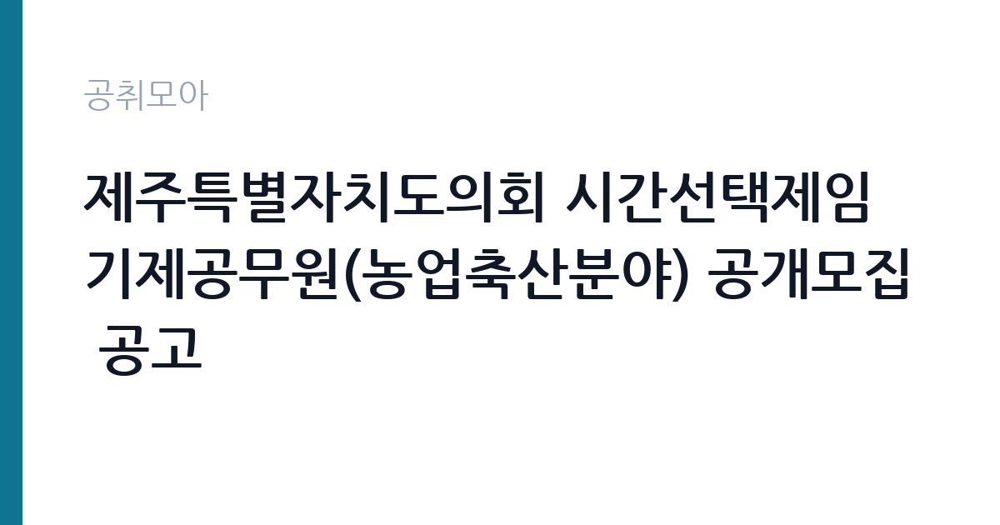

[지자체] 제주특별자치도의회 시간선택제임기제공무원(농업축산분야) 공개모집 공고
제주특별자치도 의회사무처 · 제주 · 마감 2026-11-03 (D-13) · 출처 나라일터

한눈에 보는 모집 조건
| 기관 | 제주특별자치도 의회사무처 |
|---|---|
| 공고명 | 제주특별자치도의회 시간선택제임기제공무원(농업축산분야) 공개모집 공고 |
| 고용형태 | 임기제 |
| 근무지 | 제주 |
| 게시일 | 2026-10-21 |
| 마감일 | 2026-11-03 (D-13) |
지원자격, 이렇게 읽으세요
- 시간선택제임기제가급 1명
- 접수 ~2026-11-03 마감
- 세부 조건은 원문 공고문 확인
임기제공무원은 공무원 신분이지만 임용 기간이 정해져 있습니다. 전문성이 필요한 업무에 채용되며 임용 기간과 연봉등급이 공고문에 명시됩니다. 임기 중에는 공무원으로서의 복무 규정과 이해충돌 방지 의무가 적용됩니다. 이번 공고는 제주특별자치도 의회사무처에서 직접 진행하는 자체 전형으로, 응시자격과 제출서류는 공고문에 항목별로 제시됩니다. 의회 지원 직무는 임기제공무원으로 채용되는 경우가 많아 임용 기간과 근무 조건이 공고문에 명시됩니다. 정책지원관은 관련 분야 학위나 경력을 요구하고, 속기 직무는 속기사 자격이나 실무 경력을 확인합니다. 의회 업무 경험과 정책 연구 경력은 우대 사항입니다. 시간선택제로 채용되면 주당 근무 시간이 정해지고 보수도 비례해 산정됩니다. 결격사유와 이해충돌 관련 확인 절차가 있습니다. 서류는 접수 마감 이후 보완이 되지 않으므로 자격 요건과 증빙 서류를 마감 전에 모두 갖춰야 합니다. 공고문에 명시된 우대 사항은 해당 여부를 확인해 증빙을 첨부해야 가점이 반영됩니다. 자격증은 유효 기간과 등록 상태를 확인해야 합니다. 갱신이 필요한 자격이라면 갱신 여부를 먼저 점검하십시오.
이 공고의 포인트
이 공고의 첫 번째 포인트는 고용 형태입니다. 임용 기간이 정해져 있지만 공무원 신분으로 복무 규정이 적용되고, 전문성이 인정되면 재임용이나 유사 직위 지원에 도움이 됩니다. 두 번째는 업무 범위가 명확하다는 점입니다. 의회 지원 직무로 채용되므로 배치 이후 담당 업무가 크게 흔들리지 않습니다. 세 번째는 근무지입니다. 제주 지역 근무로 수도권 공고에 비해 지원자 분포가 넓지 않아 상대적으로 경쟁이 분산되는 경우가 있습니다. 접수 기간이 길지 않아 서류 준비와 자격 확인을 동시에 진행해야 합니다. 같은 직무 공고 중에서는 접수 마감이 가장 빨라 일정을 앞당겨 잡아야 합니다. 다만 선발 인원이 1명으로 많지 않아 자격을 갖춘 지원자가 몰리면 경쟁률이 높아질 수 있습니다.
전형은 어떻게 진행되나
전형은 서류심사와 면접심사를 기본으로 하고 직무에 따라 필기나 실기, 체력검정이 추가됩니다. 서류 단계에서는 응시자격 충족 여부와 제출서류 형식을 확인하며 이 단계에서 탈락하는 지원자가 적지 않습니다. 면접은 직무 이해도와 경험을 확인하는 방식으로 진행되고 발표는 개별 통보나 홈페이지 게시로 이뤄집니다. 최종합격 이후에는 결격사유 조회와 채용 신체검사가 이어지며 이 절차에서 문제가 확인되면 합격이 취소될 수 있습니다. 구체적인 전형 단계와 배점은 공고문에 표로 정리되어 있으니 원문을 기준으로 준비하십시오. 면접조 편성과 대기 시간이 공지되므로 당일 도착 시간을 여유 있게 잡으십시오.
원문에서 확인한 전형 방식
○ 모집분야 : 농업축산분야 ○ 선발직급 : 시간선택제임기제 가급 ○ 자격요건 : 붙임 참조 ○ 접수기간 : 2026.10.30.~11.3. ○ 응시방법 : 방문접수 및 우편(빠른등기) ○ 문의처 : 064-741-1892 ※ 기타 자세한 사항은 붙임 파일 참조 바랍니다.
이런 분께 추천해요
- 정책 조사·분석 경험이 있는 분
- 회의 기록과 자료 정리에 정확성이 있는 분
- 정치적 중립과 비밀 유지를 지킬 수 있는 분
지원 전 체크리스트
- 응시자격 요건과 경력 기준을 충족하는가 — 경력은 증명서로 입증해야 합니다
- 임용 기간과 연봉등급, 근무 시간 조건을 확인했는가
- 제출서류 목록을 모두 준비했는가 — 누락 시 서류 단계에서 탈락합니다
- 접수 마감 2026-11-03 이전에 접수 방식을 확인해 제출했는가
모집 일정과 제출 타이밍
접수 마감은 2026-11-03이고 공고는 2026-10-21에 게시되었습니다. 준비 기간 13일 안에 서류 작성, 증빙 발급, 접수를 모두 마쳐야 하므로 주말을 포함해 일정을 미리 나누는 것이 좋습니다. 특히 경력 기술서나 직무수행계획서를 요구하는 공고는 작성에 시간이 걸리므로 첫날 초안을 잡으십시오. 서류 합격자 발표와 면접 사이 간격이 짧은 경우가 많아 면접 예상 질문은 서류 제출 전에 정리해 두는 편이 유리합니다. 마감 직전에는 접속이 몰리므로 여유를 두고 제출하십시오. 접수 첫날에 몰리면 시스템 접속이 지연될 수 있으므로 오전 시간대 제출이 안전합니다. 제주 근무지는 도내 이동 거리가 길고 숙소 제공 여부가 총비용에 큰 영향을 줍니다. 마감까지 2주 안팎이 있어 준비할 시간은 있지만 미루면 촉박해집니다. 선발 인원이 한두 명 수준이라 지원자 개개인의 서류 완성도가 그대로 평가에 반영됩니다.
직무 이해하기: 지자체
지방의회는 조례 제정과 예산 심의, 행정 감시를 수행하는 의결기관입니다. 의원을 보좌하는 정책지원 인력과 회의 기록 인력을 별도로 두고, 회기 중에는 업무량이 크게 늘어납니다. 의회 지원 업무는 의원의 입법과 정책 활동을 보좌하는 일입니다. 조례안과 정책 자료를 조사하고 회의 준비와 결과 정리를 맡습니다. 상임위원회 회의에 배석해 발언 내용을 확인하고 필요한 자료를 요청해 정리합니다. 지역 현안에 대한 통계와 사례를 모아 보고서 형태로 만드는 업무도 비중이 큽니다. 회기 중에는 회의 일정이 몰려 야근과 주말 근무가 발생할 수 있습니다. 업무는 혼자 처리하기보다 부서 단위로 나눠 진행되므로 담당 구역과 협업 범위를 입사 초에 확인하는 것이 중요합니다. 업무 매뉴얼과 지침이 문서로 정리되어 있어 절차를 익히면 반복 업무는 빠르게 손에 붙습니다.
자기소개서 작성 팁
의회 지원서는 조사·분석 능력과 중립성을 동시에 보여줘야 합니다. 정책 보고서나 통계 분석을 수행한 경험을 구체적으로 쓰고 사용한 자료와 방법을 밝히십시오. 특정 입장을 지지하는 듯한 서술은 피하고 근거에 기반해 정리하는 태도를 강조하십시오. 회의 기록이나 의사록 작성 경험도 좋은 소재입니다. 문항별 글자 수 제한을 먼저 확인하고, 각 문항의 첫 문장에 결론을 배치하는 방식이 읽기 쉽습니다. 지원 동기는 기관의 어떤 사업에 기여하겠다는 한 문장으로 시작하고, 이어서 본인의 경험을 근거로 붙이십시오. 감점을 피하려면 다른 기관에 보낼 수 있는 범용 문장을 그대로 쓰지 않는 것이 중요합니다. 기관 이름과 사업명이 문장 안에 자연스럽게 들어가야 준비도가 드러납니다.
면접 준비 포인트
면접에서는 자료 조사 능력과 정치적 중립성을 확인합니다. 특정 현안에 대해 어떤 자료를 어떤 순서로 찾을지, 상반된 이해관계를 가진 요구를 어떻게 정리할지 묻습니다. 의회 업무의 특성상 중립적 태도와 비밀 유지 의식을 반드시 언급하십시오. 회기 중 업무량이 몰릴 때의 대응 방식도 질문 대상입니다. 답변은 상황, 판단, 조치의 순서로 정리하면 전달이 분명해집니다. 모르는 질문에는 모른다고 밝히고 확인 방법을 제시하는 편이 억지 답변보다 낫습니다. 마지막에는 근무 의사와 함께 2026-11-03 이후 일정에 언제든 응할 수 있다는 점을 전달하십시오. 직무 특성상 체력이나 근무 시간에 대한 질문이 나올 수 있으므로 솔직하게 답하고 관리 계획을 함께 제시하십시오.
급여·근무조건 읽는 법
의회 임기제공무원의 보수는 지방공무원 보수규정상 연봉등급제를 적용받습니다. 연봉은 등급별 하한액과 상한액 범위에서 경력과 직무 난이도를 반영해 책정되고 임용 기간이 함께 정해집니다. 시간선택제로 임용되면 주당 근무 시간에 비례해 연봉이 산정되므로 공고문의 근무 시간 조건을 반드시 확인해야 합니다. 2026년 최저임금은 시급 10,320원, 월 환산 2,156,880원입니다. 구체적인 연봉 등급과 금액은 원문에서 확인하십시오. 2026년 적용 최저임금은 시급 10,320원, 월 환산 2,156,880원(주 40시간·209시간 기준)입니다. 고용노동부 고시 제2025-47호로 확정된 금액입니다. 보수는 보통 기본급, 각종 수당, 상여로 나뉘어 지급됩니다. 기본급만 보면 적어 보여도 정액급식비와 명절휴가비, 복지포인트가 붙으면 실제 총액이 달라지므로 항목별로 확인해야 합니다. 4대 보험과 퇴직급여 적용 여부도 함께 보십시오. 기간제는 계약 기간이 짧아 월 급여가 높아도 연간 총액은 적을 수 있습니다.
자주 묻는 질문
- 선발 인원은 몇 명인가요?
공고문 기준 1명입니다. 직종별로 인원이 나뉘는 경우가 있으니 모집분야 항목을 함께 확인하십시오. - 근무지는 어디인가요?
제주 지역의 제주특별자치도 의회사무처 소속 근무지입니다. 세부 주소와 출퇴근 조건은 원문 공고문에서 확인할 수 있습니다. - 보수는 얼마인가요?
채용 신분(임기제공무원)과 기관 임금 규정에 따라 정해지며 구체적인 금액은 공고문 처우 항목에 제시됩니다. 금액이 공개되지 않은 경우에는 원문의 보수표를 확인하십시오.
함께 보면 좋은 공고
[지자체] 서울특별시 영등포구 시간선택제임기제공무원(마급, CCTV 관제요원) 채용 시험 공고 — 마감 2026-11-05[지자체] 2026년 제10회 경기도 임기제공무원 임용시험 공고 — 마감 2026-11-04[지자체] 2026년 제3회 경기도 개방형직위 임용시험 공고 — 마감 2026-11-06출처: 나라일터 공개정보를 바탕으로 공취모아가 정리한 안내글입니다. 모집 조건·일정은 변경될 수 있으니 지원 전 반드시 원문 공고문을 확인하세요. 본 글은 정보 제공용이며 합격을 보장하지 않습니다.